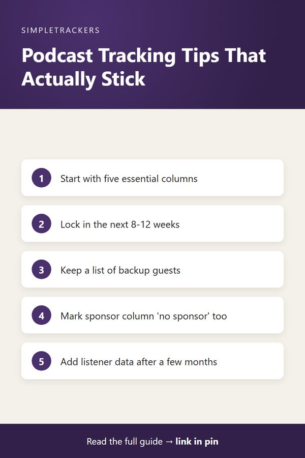

Episode Tracking FAQ: Your Questions Answered
← Back to the Complete Podcast Production Guide
Key takeaways
- Start small: track episode number, guest, recording date, publish date and status first. Add sponsors, affiliate links and promotion later.
- Plan 8-12 weeks ahead: a rolling 12-week view lets you spot conflicts before they hit, without locking dates too far out.
- It takes minutes: about five to ten minutes of updates per episode saves hours of searching email.
- Know it's working: you hit every publish date, can answer "where is episode X?" in ten seconds, and never search email for guest details.
As we talk with podcasters about organizing their shows, similar questions come up repeatedly. Here are the most common ones and the answers that work for successful shows.
Do I Really Need to Track All These Details?
Short answer: yes, but you can start small. You don't need to fill in every column from day one. Build the system in phases as your show grows.
- Start with the essentials. Episode number, guest name, recording date, publish date, and confirmation status.
- Add revenue details. Once those become routine, add sponsorship details and affiliate links.
- Add promotion. Track promotion status after publishing is locked down.
That said, the more detail you track, the more insight you gain. Halfway through the year, you'll have data on which episodes took longest to edit, which guests became regular contributors, and which sponsorships converted well. That data is gold for scaling your show, so plan to expand tracking over time.
How Far in Advance Should I Plan Episodes?
Aim to have your next 8-12 weeks locked in the tracker before recording. For each episode, you need a confirmed guest (or topic), a recording date, and a publish date. This gives you a buffer to handle schedule changes without cascading problems.
In practice, several episodes are moving at once, and your tracker shows all of this simultaneously:
- Recording: next week's episode.
- Editing: last week's recording.
- Publishing: this week's episode.
- Outreach: guests for episodes four weeks out.
Don't lock in too far ahead
Don't lock in publish dates more than 12 weeks out. Life happens and schedules change. A rolling 12-week view is enough to spot conflicts and capacity problems before they hit.
What If a Guest Cancels Last Minute?
This happens. Your tracker should have a "reschedule" or "cancelled" status so you can mark what happened. If a guest cancels with only a week until the publish date, you have two options:
- Find a replacement guest quickly. The harder option.
- Publish a solo episode or clip show. The easier option.
Whichever you choose, your tracker shows you that the slot needs filling immediately.
Pro tip: keep a backup list
Keep a list of backup guests: people you've interviewed before who can jump in on short notice. When you lose a guest, reach out to your backup list. You can often fill the slot within 24-48 hours.
How Do I Handle Sponsorships If I Don't Have Many?
If you only have sponsorships occasionally, you still want to track them. You might have three episodes with one sponsor in month one, zero sponsored episodes for two months, then five sponsored episodes the next month. Without tracking, you lose the pattern, and mistakes creep in:
- Missed ads. You skip adding sponsor ads to an episode and don't get paid for them.
- Wrong sponsor. You run an ad for Sponsor A on an episode that was supposed to feature Sponsor B.
Even if you have no sponsorships yet, fill in that column with "organic" or "no sponsor" so you're thinking about sponsorship from the beginning. When you do land a sponsor, you'll already have a system to manage them professionally.

Can I Use Google Sheets or Do I Need Special Software?
Google Sheets works fine if you design the structure right: one column per data point (date, episode number, guest, status, etc.) and one row per episode. Sheets let you sort, filter, and color-code episodes by status.
| Google Sheets | Specialized podcast tracker | |
|---|---|---|
| Sort, filter, color-code | Yes | Yes, including filtering by show or status |
| Deadline warnings | No automatic flags or reminders | Automatic deadline warnings |
| Structure | You design it yourself | Better data validation and built-in workflows for each phase |
The other limitation: Sheets becomes hard to manage once you've got more than 50-60 episodes. Specialized trackers (including the Podcast Producer & Episode Management Tracker) add features that spreadsheets can't. But you can start with Sheets if that's what you have today. The important thing is to start tracking, whether in Sheets, Airtable, or a purpose-built tool.
How Much Time Does Tracking Actually Take?
| Task | Time |
|---|---|
| Add a new episode (guest name, recording date, publish date) | 2 minutes |
| Each update (guest confirmed, title added, marked edited) | 30 seconds |
| Total across one episode's production | 5-10 minutes |
That small time investment prevents hours of searching for a guest's email, digging for when an episode was recorded, or trying to remember which sponsorship belonged to which episode. The time savings compound.
What If I'm Behind on Publishing? Does Tracking Help?
Absolutely. If you're behind, the first thing to do is look at your tracker. You immediately see:
- Which episodes are in editing, and when they need to finish
- Which are waiting for show notes
- Which have publish dates coming up
From there you can see which episodes can be finished this week and reprioritize accordingly.
Tracking also prevents falling further behind. If three episodes have editing deadlines on Friday and you know you can only finish two, you proactively push one to the following week. That beats rushing it and creating a quality problem.
Should I Track Listener Numbers?
If you have access to listener metrics (downloads, listening time, completion rate), tracking them by episode is incredibly valuable. Over time you can:
- Spot winners. See which episodes get more listens and which topics resonated.
- Measure promotion. Correlate promotion efforts with listening spikes.
- Compare formats. See if live guests drive more listeners than pre-recorded content.
You don't need this data on day one. Once your show has a few months of episodes and consistent listener data, add a "listeners" column. Six months of data will reveal patterns that guide your content strategy.
What's the Minimum Viable Tracker?
If you're just starting and don't want to overthink it, track these six columns. That's enough to keep your pipeline organized. Add other columns as you need them.
| Column | What goes in it |
|---|---|
| Date | Publish date |
| Episode Number | Sequential number |
| Guest Name | Who's on the episode |
| Recording Date | When you record |
| Publish Date | When it goes live |
| Status | Pending / recorded / edited / published |
How Do I Know If My Tracking System Is Working?
Three signs your tracker is actually working:
- You never miss a publish date. You're referencing deadlines ahead of time.
- You answer status questions in ten seconds. "What's the status of episode X?" is one look at the tracker.
- You've stopped searching email. Guest details and recording dates are all in the tracker.
Still searching email?
If you're still searching email, missing deadlines, or confused about which episode is where, your system needs improvement. Either it's not detailed enough, or you're not checking it often enough. Add the details or time blocks that will fix the gap.
Getting Started Today
The best time to implement tracking was when you published Episode 1. The second-best time is today. Start with a simple structure, keep it in a place you check every day, and expand it as your show grows. Within a few weeks, you'll wonder how you ever managed without it.
The Podcast Producer & Episode Management Tracker on Gumroad comes pre-built with the right columns and structure for podcast production. It's ready to use the moment you download it. No need to design your own system or guess what to track—we've built it based on what successful podcasters actually need.
Stop managing your podcast in email and notes. Track it properly, and watch your consistency and confidence improve immediately.